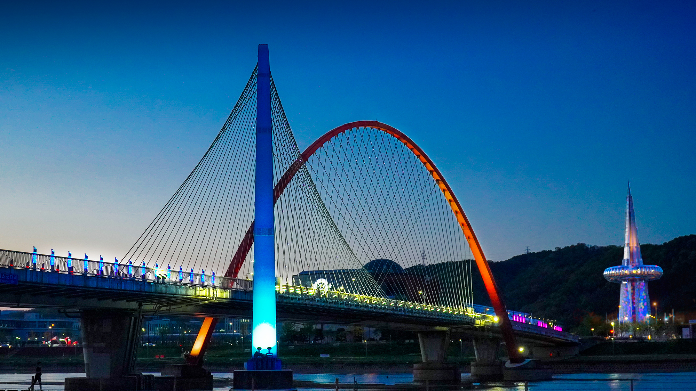
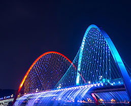
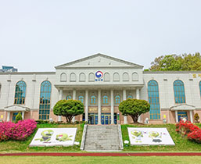

온천도시 유성
유성명소
추천여행
축제·공연
숙박·음식·공연
여행가이드

취향
척척
여행객들을 위한 유성구만의 멋진 여행코스를 추천합니다.

유성 HOT PICK
느리게 걷고 자주 멈추는 여유로운 길
VIEW
유성구 벚꽃 사진
봄볕 좋은 날 향기로운 꽃에 취하는 달콤한 시간
VIEW

솔로몬로파크
법무부에서 운영하는 국내 최초 법교육 테마공원
VIEW
호국의 길
경건하고 아름다운 현충원 둘레길
VIEW
요기조기
맛있는 식도락 여행부터 맞춤관광까지 하루 더 머물고 싶은 유성구
하루를 부탁해
유성구에서 편안한 하루
자세히보기
우리동네지도
우리동네 즐거움이 한가득
자세히보기
유성구 식도락
유성구 맛집을 찾아서
자세히보기
맨 위로가기